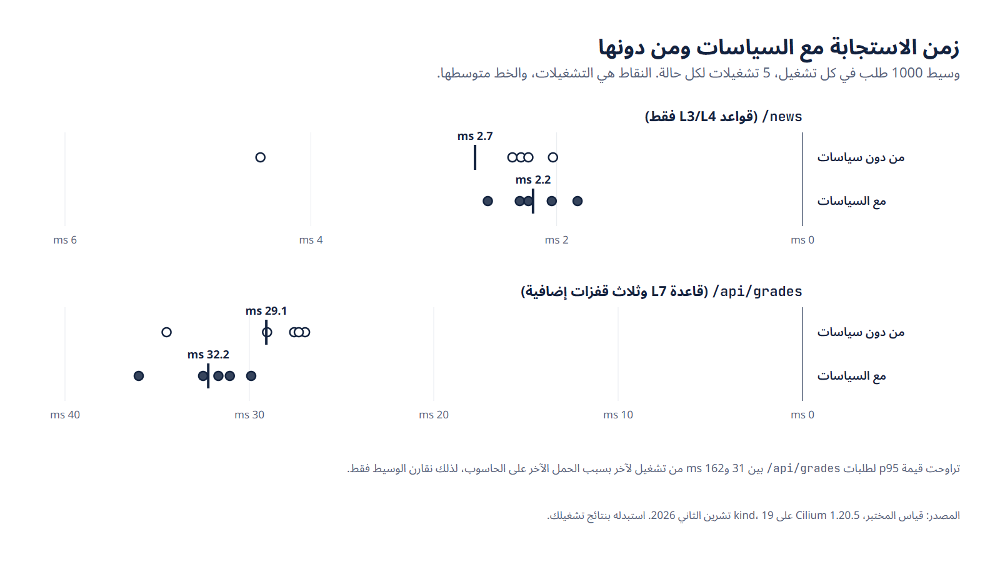
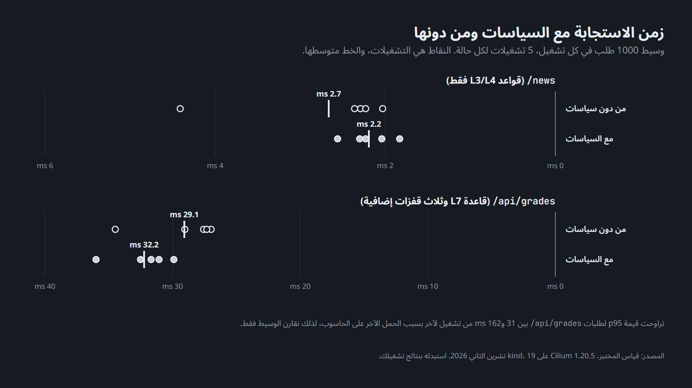
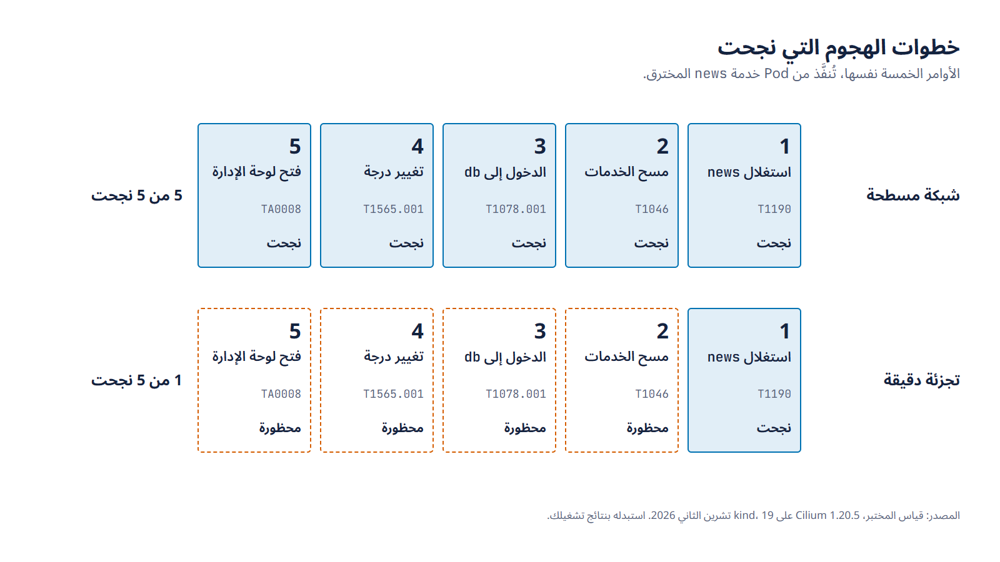
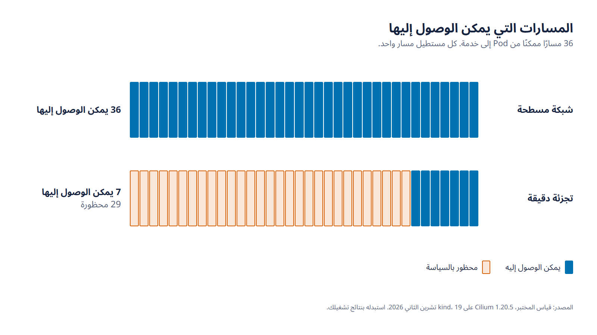
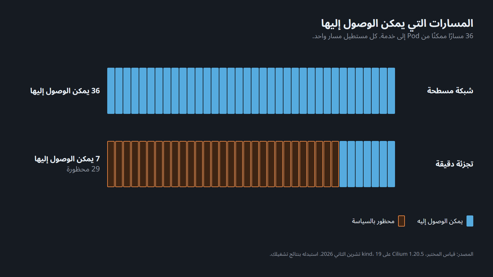
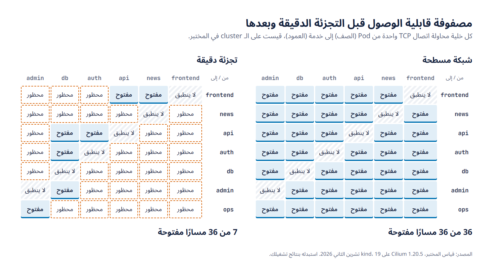
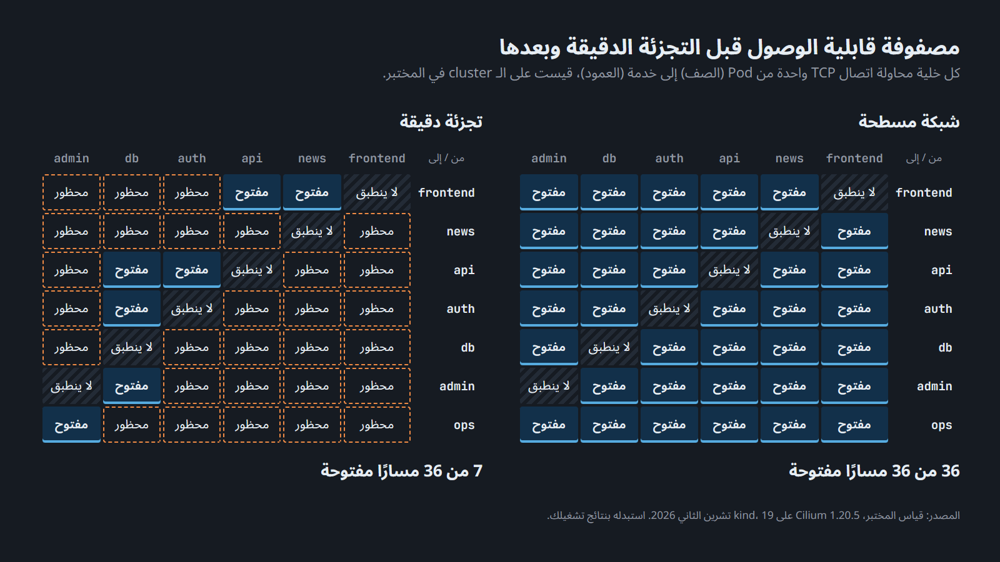

الفصل 12. القياس
نقيس هنا كلفة التجزئة الدقيقة (micro-segmentation). والأرقام كلها من حاسوبنا نفسه. نكتب measure.py، وهو سكربت يقيس زمن 21,000 طلب إلى البوابة مع سياساتنا ومن دونها، ونتعلم أي الفروق يصح أن نذكرها على أنها حقيقية وأيها ضوضاء. وفي النهاية يكون لدينا ملف نتائج من 21 سطراً، والرسوم البيانية التي يحتاجها فصل النتائج. نحتاج إلى ساعتين تقريباً، ويستغرق تشغيل السكربت نفسه نحو 10 دقائق.
معنى الوسيط و p95 و stdev
زمن الاستجابة (latency) هو الوقت من إرسال الطلب حتى وصول الجواب كاملاً. ويطبع السكربت أربعة أرقام لكل دفعة. الوسيط (median) هو الزمن الأوسط بعد الترتيب. وهو رقم الطلب العادي. والمتوسط الحسابي (mean) هو المعدّل المعروف. وبضعة طلبات بطيئة ترفعه. أمّا p95 و p99 فهما الزمنان اللذان جاءت 95 و99 في المئة من الطلبات أسرع منهما، لذلك يصفان الطرف البطيء، أي الطلبات القليلة التي صادفت لحظة كان فيها الحاسوب مشغولاً بشيء آخر. ويكرر السكربت الاختبار كله خمس مرات. وتقول قيمة stdev كم يبتعد وسيط تشغيل واحد عادةً عن البقية. هذا التشتت هو الضوضاء (noise). والحمل الإضافي (overhead) هو الفرق بين متوسط قيم الوسيط في مرات التشغيل مع السياسات ومتوسطها من دونها.
كتابة measure.py
يضبط measure.py الشبكة على وضع واحد، ويسجّل الدخول باسم sara، ويرسل دفعة من الطلبات إلى صفحتين من البوابة ويقيس زمن كل طلب. ثم ينتقل إلى الوضع الآخر ويفعل الشيء نفسه، ويكرر ذلك خمس مرات، ويكتب كل شيء في ملف.
ننشئ ~/microseg/measure.py في VS Code بالطريقة نفسها التي اتبعناها في الفصل 5، ونلصق فيه هذا الملف، ثم نضغط Ctrl+S حتى تختفي النقطة المستديرة من التبويب.
# Latency with vs. without policies. Run from ~/microseg with: .venv/bin/python measure.py
import csv
import os
import statistics
import subprocess
import time
import requests
PORTAL = "http://127.0.0.1:30080"
RUNS = 5
REQUESTS = 1000 # timed requests per endpoint per run
WARMUP = 50 # requests sent first and thrown away
ENDPOINTS = ["/news", "/api/grades"]
CONDITIONS = ["no-policies", "policies"]
def set_policies(condition):
if condition == "policies":
subprocess.run(["kubectl", "apply", "-f", "k8s/policies/"], check=True)
else:
subprocess.run(["kubectl", "delete", "-f", "k8s/policies/", "--ignore-not-found"], check=True)
time.sleep(15) # give Cilium time to update every pod
def login(session):
answer = session.post(PORTAL + "/api/login", json={"username": "sara", "password": "sara2026"}, timeout=10)
return answer.json()["token"]
def measure(session, path, token):
times = []
for i in range(WARMUP + REQUESTS):
start = time.perf_counter()
answer = session.get(PORTAL + path, headers={"Authorization": "Bearer " + token}, timeout=10)
elapsed_ms = (time.perf_counter() - start) * 1000
answer.raise_for_status() # stop on any error, never time a failed request
if i >= WARMUP:
times.append(elapsed_ms)
cuts = statistics.quantiles(times, n=100) # cuts[94] = p95, cuts[98] = p99
return [round(statistics.median(times), 2), round(cuts[94], 2), round(cuts[98], 2),
round(statistics.mean(times), 2)]
os.makedirs("results", exist_ok=True)
session = requests.Session()
rows = []
for run_number in range(1, RUNS + 1):
for condition in CONDITIONS:
set_policies(condition)
token = login(session)
for path in ENDPOINTS:
numbers = measure(session, path, token)
print(run_number, condition, path, "median/p95/p99/mean ms:", numbers)
rows.append([condition, path, run_number] + numbers)
with open("results/latency.csv", "w", newline="") as f:
writer = csv.writer(f)
writer.writerow(["condition", "endpoint", "run", "median_ms", "p95_ms", "p99_ms", "mean_ms"])
writer.writerows(rows)
print("\nMean of the run medians:")
for path in ENDPOINTS:
result = {}
for condition in CONDITIONS:
medians = [row[3] for row in rows if row[0] == condition and row[1] == path]
result[condition] = statistics.mean(medians)
print(f" {path:12} {condition:12} {result[condition]:7.2f} ms (stdev {statistics.stdev(medians):.2f})")
overhead = result["policies"] - result["no-policies"]
print(f" {path:12} overhead {overhead:7.2f} ms ({100 * overhead / result['no-policies']:.1f} %)")(1) يرسل PORTAL = "http://127.0.0.1:30080" كل طلب عبر NodePort، وهو الباب نفسه الذي يستخدمه الطلاب الحقيقيون والمهاجم.
(2) تحدد RUNS = 5 و REQUESTS = 1000 و WARMUP = 50 حجم الاختبار. يرسل كل تشغيل 1,050 طلباً إلى كل صفحة في كل وضع، ويرمي أول 50 من كل دفعة، فيكون المجموع 21,000 طلب. هذه الخمسون الأولى هي الإحماء. فالطلبات الأولى بعد أي تغيير في السياسات أبطأ، لأنّ الاتصالات تُفتح في تلك اللحظة والذاكرات المؤقتة تمتلئ، ولو حُسبت لجعلت السياسات تبدو أغلى مما هي عليه.
(3) تسمّي ENDPOINTS الصفحتين. تمر /news من frontend إلى news، وهو مسار لا تغطيه إلا قواعد العنوان والـ port. وتمر /api/grades من frontend إلى api عبر قاعدة L7 و Envoy، ثم من api إلى auth للتحقق من رمز الدخول (token)، ومن api إلى db لجلب الدرجات. لذلك تُظهر /news كلفة قواعد L3/L4 وحدها، وتضيف /api/grades إليها قاعدة L7.
(4) تشغّل set_policies الأمر kubectl apply أو kubectl delete على المجلد k8s/policies/ كله، ثم تنتظر 15 ثانية حتى يحدّث Cilium كل Pod. ويجعل check=True السكربت يتوقف إذا أبلغ kubectl عن خطأ.
(5) تسجّل login الدخول باسم sara وتعيد رمز الدخول الخاص بها، بالطريقة نفسها التي يتبعها check-portal.sh.
(6) تتولى measure القياس. الدالة time.perf_counter() هي أدق ساعة في Python. ويوقف answer.raise_for_status() السكربت عند أي حالة خطأ، فلا يُقاس طلب فاشل كأنه طلب سريع. ولا يحتفظ if i >= WARMUP بالزمن إلا بعد انتهاء الإحماء. أمّا statistics.quantiles(times, n=100) فيقسم الأزمنة المرتبة إلى 100 مجموعة متساوية، ويعيد نقاط القطع التسع والتسعين التي تفصل بينها. يعدّ Python مواقع القائمة بدءاً من 0، لذلك cuts[94] هي نقطة القطع الخامسة والتسعون، أي p95، و cuts[98] هي p99.
(7) تشغّل الحلقة الرئيسية الوضعين داخل كل تشغيل، الواحد بعد الآخر. فإذا مرّت على الحاسوب دقيقة بطيئة وقعت على الوضعين معاً، ولم تضرّ أحدهما وحده.
(8) تكتب الكتلة with open(...) الملف results/latency.csv، بصف واحد لكل تشغيل ووضع وصفحة. خمس مرات تشغيل في وضعين في صفحتين تعطي 20 صفاً، ومع سطر العناوين يصبح في الملف 21 سطراً. ويُكتب الملف مرة واحدة في النهاية تماماً، لذلك لا يترك التشغيل الذي يتوقف في منتصفه ملفاً جديداً.
(9) يطبع الجزء الأخير، لكل صفحة ووضع، متوسط قيم الوسيط في مرات التشغيل الخمس مع قيمة stdev الخاصة بها، ثم الحمل الإضافي بالملّي ثانية وبالنسبة المئوية.
(10) تنتهي CONDITIONS بالقيمة "policies"، لذلك ينتهي السكربت دائماً وسياساتنا مطبّقة.
أمّا CSV، وهو اختصار comma-separated values، فجدول نصي عادي يمثل فيه كل سطر صفاً واحداً، وتفصل الفواصل بين الأعمدة. ويفتحه Excel مباشرة.
نتحقق من أنّ الملف كله وصل إلى القرص، فقد يعرض VS Code نصاً لم يُحفظ بعد، أمّا الأوامر التالية فلا تقرأ إلا ما على القرص.
cd ~/microseg
wc -l measure.pyيعدّ wc -l أسطر الملف.
ما يجب أن نراه: سطر واحد.
يجب أن يكون 71 measure.py. الرقم الأصغر معناه أنّ اللصق انقطع أو أنّ الملف لم يُحفظ. نلصق الملف كله من جديد، ونضغط Ctrl+S، ونشغّل wc -l measure.py مرة أخرى.
ثم نتحقق من أنّ الملف مكتوب بلغة Python صحيحة.
cd ~/microseg
.venv/bin/python -m py_compile measure.py && echo "measure.py compiles"يقرأ -m py_compile الملف ويبلغ عن أي خطأ في الصياغة دون أن يشغّله. ولا يشغّل && الأمر echo إلا إذا نجح هذا الفحص.
ما يجب أن نراه: سطر واحد.
يجب أن يكون measure.py compiles.
إذا ظهر شيء آخر
IndentationError: unexpected indentالسبب أنّ بعض الأسطر فقدت مسافات أو اكتسبت مسافات زائدة في أثناء اللصق، والرسالة تذكر رقم السطر. نفتح الملف في VS Code، ونحذف كل ما فيه، ونلصق الملف من جديد بالاختصار Ctrl+V ثم نحفظ.
[Errno 2] No such file or directory: 'measure.py'السبب أنّ الملف ليس في ~/microseg، أو أنّ له اسماً مختلفاً. نتحقق من الاسم في قائمة الملفات في VS Code، ثم نشغّل الأمر من جديد داخل ~/microseg.
تشغيل measure.py
يستغرق التشغيل نحو 10 دقائق، وكان 9 دقائق و38 ثانية على حاسوب الاختبار. وكل برنامج يعمل في أثنائه يضيف ضوضاء. لذلك نوصل الحاسوب بالشاحن، ونغلق تبويب Hubble UI وتبويب لوحة التحكم وأي نوافذ متصفح أخرى، ونترك الحاسوب حتى يعود موجّه الأوامر. أمّا برنامج لوحة التحكم نفسه فيمكن أن يبقى يعمل في الـ terminal الخاصة به، لأنه لا يفعل شيئاً ما لم تطلب منه صفحة ذلك.
cd ~/microseg
time .venv/bin/python -u measure.py | tee ~/microseg/evidence/ch14-measure.txtيشغّل time الأمر الذي بعده، ويطبع عند انتهائه المدة التي استغرقها. و .venv/bin/python هو مفسّر Python الموجود داخل البيئة الافتراضية لمشروعنا، وهو الذي ثُبّتت فيه المكتبة requests. ويجعل -u مفسّر Python يطبع كل سطر حالما يجهز. فمن دونه يحبس Python أسطره كلما ذهبت مخرجاته إلى أنبوب، فلا نرى إلا أسطر kubectl حتى النهاية تماماً. أمّا | tee ~/microseg/evidence/ch14-measure.txt فيعرض المخرجات ويحفظ نسخة منها للتقرير.
ما يجب أن نراه: أسطر من kubectl تقول إنّ السياسات العشر حُذفت أو أُنشئت، وبينها سطر واحد لكل تشغيل ووضع وصفحة. وفي النهاية يأتي ملخص قصير.
المخرجات أعلاه لا تضم إلا أسطر القياس والملخص، وهي على شاشتنا تقع بين أسطر kubectl. يبدأ كل سطر قياس برقم التشغيل والوضع والصفحة، تليها أربعة أرقام بالملّي ثانية بهذا الترتيب: الوسيط ثم p95 ثم p99 ثم المتوسط. الأسطر الستة الأخيرة هي الملخص، وتعطي لكل صفحة متوسط قيم الوسيط في مرات التشغيل الخمس بلا سياسات ومع السياسات، كل منهما مع stdev الخاص به، ثم الحمل الإضافي. على حاسوب الاختبار أعطت /news القيمة 2.66 ms بلا سياسات و2.19 ms معها، وأعطت /api/grades القيمتين 29.08 ms و32.23 ms. أرقامنا ستختلف، لأنها تعتمد على الحاسوب وعلى ما كان يشغّله في الوقت نفسه. وآخر ما يُطبع هو نتيجة time، و real فيها هو الزمن الفعلي المنقضي كما تقيسه الساعة.
إذا ظهر شيء آخر
ينتهي التشغيل بعد ثانية دون أي مخرجات. الملف المحفوظ فارغ أو ناقص. نحفظه في VS Code ونتحقق من wc -l measure.py مرة أخرى.
error: the path "k8s/policies/" does not existالسبب تشغيل السكربت من مجلد آخر، فلا يشير المسار النسبي k8s/policies/ إلى أي مكان، ثم يتوقف Python مع CalledProcessError. نشغّل cd ~/microseg ونبدأ القياس من جديد.
ModuleNotFoundError: No module named 'requests'السبب تشغيل السكربت بالأمر python3 بدلاً من .venv/bin/python، و Python الخاص بالنظام لا يضم requests. نستخدم الأمر كما هو مكتوب تماماً.
requests.exceptions.HTTPError: 403 Client Error: Forbidden for url: http://127.0.0.1:30080/api/gradesفشل أحد الطلبات فتوقف السكربت عمداً. نشغّل أولاً kubectl apply -f k8s/policies/، لأنّ السكربت ربما توقف والسياسات محذوفة. رمز الحالة 403 على /api/grades معناه أنّ قاعدة L7 في سياسة api لا تذكر GET /api/grades بالضبط. أمّا 500 Server Error أو KeyError: 'token' فيشير إلى بوابة ليست في حالة سليمة. نشغّل bash check-portal.sh، ونصلح ما يبلغ عنه بمساعدة الفصل 13، ثم نعيد القياس.
ملف النتائج صفاً صفاً
يعطينا الملخص الأرقام الرئيسية. أمّا ملف CSV فيضم كل مرات التشغيل، ويُظهر مقدار تقلّب الأرقام من تشغيل إلى آخر.
cat results/latency.csvيطبع cat محتوى الملف على الشاشة.
ما يجب أن نراه: سطر عناوين ثم 20 صفاً، أربعة لكل تشغيل.
condition,endpoint,run,median_ms,p95_ms,p99_ms,mean_ms
no-policies,/news,1,2.03,3.07,4.69,2.19
no-policies,/api/grades,1,34.49,161.73,330.42,55.05
policies,/news,1,2.04,2.79,3.78,2.15
policies,/api/grades,1,29.9,69.29,202.17,37.44
no-policies,/news,2,4.41,16.15,33.11,6.2
no-policies,/api/grades,2,29.04,161.78,325.87,50.4
policies,/news,2,1.83,2.72,3.72,1.97
policies,/api/grades,2,31.06,99.76,214.31,42.44
no-policies,/news,3,2.29,4.44,8.41,2.65
no-policies,/api/grades,3,26.98,47.75,71.21,30.15
policies,/news,3,2.3,3.05,4.17,2.4
policies,/api/grades,3,36.0,115.6,230.79,48.44
no-policies,/news,4,2.36,3.02,4.1,2.43
no-policies,/api/grades,4,27.57,33.66,38.38,28.17
policies,/news,4,2.23,2.69,3.15,2.27
policies,/api/grades,4,32.51,48.21,74.71,34.76
no-policies,/news,5,2.23,2.73,3.03,2.28
no-policies,/api/grades,5,27.32,30.98,34.44,27.67
policies,/news,5,2.56,3.56,5.77,2.7
policies,/api/grades,5,31.68,37.55,44.58,32.47الأعمدة هي الوضع والصفحة ورقم التشغيل، ثم الوسيط و p95 و p99 والمتوسط بالملّي ثانية. لننظر في العمود p95_ms الخاص بالصفحة /api/grades بلا سياسات. في التشغيلين 1 و2 من الاختبار كانت القيمة نحو 161 ms، وفي التشغيل 5 كانت 30.98 ms، ولم يتغير شيء في الـ cluster بين مرات التشغيل هذه. كان الحاسوب مشغولاً بشيء آخر لبعض الوقت. وبقيت قيم الوسيط بين 27 و36 ms تقريباً طوال ذلك. ولهذا السبب يكرر السكربت كل شيء خمس مرات ويقدّم الوسيط أولاً.
إذا ظهر شيء آخر
cat: results/latency.csv: No such file or directoryالسبب أنّ السكربت توقف قبل نهايته، والملف لا يُكتب إلا بعد آخر تشغيل. نصعد في مخرجات الخطوة السابقة حتى نجد الخطأ، ونصلحه، ثم نعيد القياس.
الضوضاء: متى يكون الفرق حقيقياً
لا تتساوى قيمتا وسيط تماماً أبداً. فقبل أن نسمّي فرقاً كلفةً نقارنه بالضوضاء. يستخدم هذا الدليل قاعدة تقريبية حذرة عن قصد، وهي ليست اختبار دلالة إحصائية بالمعنى الدقيق. نأخذ القيمة الأكبر من قيمتي stdev لتلك الصفحة ونضاعفها. فإذا كان الحمل الإضافي أصغر من الناتج، نذكره على أنه ضمن حدود الضوضاء.
نطبّق القاعدة على أرقام حاسوب الاختبار. في /api/grades كان الحمل الإضافي 3.15 ms، وأكبر قيمتي stdev كانت 3.12 ms. ضعف التشتت 6.24 ms، و3.15 ms أقل منه، فالفرق ضمن حدود الضوضاء. وفي /news جاء الحمل الإضافي سالباً، ناقص 0.47 ms، مع تشتت قدره 0.98 ms. السياسات لا تستطيع أن تجعل الطلب أسرع، والإشارة السالبة دليل إضافي على أننا ننظر إلى ضوضاء. إذن لم تكلّف السياسات هنا شيئاً يمكن قياسه.
نفعل الشيء نفسه بأرقامنا، ونكتبه في فصل النتائج بهذا الشكل: «مع السياسات انتقل الوسيط للصفحة /api/grades من 29.08 ms إلى 32.23 ms. وكان التشتت بين مرات التشغيل 3.12 ms، لذلك يقع أي فرق أقل من 6.24 ms تقريباً ضمن حدود الضوضاء. والفرق المقيس 3.15 ms أقل من ذلك بفارق واضح، فلم يمكن قياس أي كلفة في زمن الاستجابة بهذا الحجم من الاختبار.» وإذا جاء أحد الفروق عندنا أكبر من ضعف تشتته، نذكره على أنه حمل إضافي مقيس، بالملّي ثانية وبالنسبة المئوية.
نذكر القيمة p95 أيضاً، مع تنبيه إلى الضوضاء التي فيها. يحسب هذا الأمر متوسط العمود p95 في ملف CSV لكل وضع وصفحة.
awk -F, 'NR > 1 {sum[$1 " " $2] += $5; n[$1 " " $2]++} END {for (k in sum) printf "%-24s mean p95 %6.2f ms\n", k, sum[k] / n[k]}' results/latency.csv | sortيقرأ awk الملف سطراً سطراً ويشغّل برنامجاً صغيراً على كل سطر. يخبره -F, أنّ الأعمدة مفصولة بفواصل. ويتخطى NR > 1 السطر الأول، وهو سطر العناوين. ولكل سطر آخر يضيف sum[...] += $5 العمود الخامس، أي p95، إلى مجموع تراكمي لذلك الوضع وتلك الصفحة، ويعدّ n[...]++ الصفوف. يعمل END مرة واحدة بعد السطر الأخير، ويطبع printf الذي فيه كل مجموع مقسوماً على عدد صفوفه. ويرتب | sort الأسطر الأربعة ترتيباً أبجدياً، لأنّ awk يطبعها بلا ترتيب ثابت.
ما يجب أن نراه: أربعة أسطر، سطر لكل وضع وصفحة.
على حاسوب الاختبار كانت p95 أقل مع السياسات في الصفحتين، 74.08 مقابل 87.18 ms في /api/grades. فالتشغيلان البطيئان بلا سياسات، اللذان رأيناهما في ملف CSV، رفعا ذلك المتوسط. وهذه ضوضاء أيضاً، لذلك نذكر p95 بجانب الوسيط، ونقول إنّ تشتتها بين مرات التشغيل كان أكبر من الفرق.
إذا ظهر شيء آخر
awk: cannot open results/latency.csv (No such file or directory)السبب أنّ الأمر لم يُشغَّل داخل ~/microseg، أو أنّ القياس لم يكتمل. نشغّل cd ~/microseg ونتحقق من أنّ الخطوة السابقة طبعت الملف.
عدّ السياسات وقواعد L7
كلفة التجزئة تشمل أيضاً القواعد التي يجب أن تُكتب وتُصان. لذلك نعدّها.
kubectl -n campus get cnp --no-headers | wc -lيحذف --no-headers سطر العناوين NAME و AGE و VALID. ويعدّ wc -l الأسطر التي تصله، سطراً لكل سياسة.
ما يجب أن نراه: رقم واحد.
10يجب أن يكون 10، ثلاث سياسات من 1-baseline.yaml وسبع من 2-allow.yaml.
قواعد L7 موجودة في سياسة api، ويستطيع grep أن يعدّها.
grep -c "method:" k8s/policies/2-allow.yamlلكل قاعدة HTTP في سياسة api سطر method: واحد بالضبط، ويعدّ grep -c الأسطر التي تحتوي النص.
يجب أن يكون 3، للقواعد GET /api/grades و GET /api/profile و POST /api/login.
إذا ظهر شيء آخر
عدد السياسات 0. السبب أنّ السياسات غير موجودة، فإمّا أنّ القياس توقف، بسبب خطأ أو بالضغط على Ctrl+C، في أثناء مرحلة بلا سياسات، وإمّا أنّ شيئاً حذفها بعد ذلك. نطبّقها بالأمر kubectl apply -f k8s/policies/ ونعدّ من جديد.
عدد قواعد L7 ليس 3. السبب أنّ سياسة api عندنا تختلف عن السياسة في الفصل 10. نقارن الملف سطراً سطراً قبل أن نكمل، لأنّ كل نتيجة في بحث التخرج تعتمد عليه.
ما نذكره في التقرير، ومن أين يأتي
هذه هي أرقام فصل النتائج. وصفّا زمن الاستجابة يحملان القيم التي قسناها بأنفسنا.
| المقياس | الشبكة المسطحة | الشبكة المجزأة | مصدره |
|---|---|---|---|
| مسارات الخدمات التي يمكن الوصول إليها | 36 من 36 | 7 من 36، أي أقل بنسبة 80.6% | مصفوفة لوحة التحكم، الفصلان 7 و10 |
| خطوات الهجوم التي نجحت | 5 من 5 | 1 من 5 | الفصلان 8 و10 |
/api/export من الخارج |
200 مع جميع الدرجات | 403 Access denied |
الفصل 10 |
| فحوص البوابة | PORTAL: 6/6 OK |
PORTAL: 6/6 OK |
check-portal.sh |
| كائنات السياسات | 0 | 10، في ملفين، فيها 3 قواعد L7 | هذا الفصل |
إسقاطات Policy denied من news بعد الهجوم |
لا شيء | العدد الذي حصلنا عليه في الفصل 11 | الفصل 11 |
وسيط زمن الاستجابة في /news |
القيمة التي قسناها | القيمة التي قسناها | measure.py |
وسيط زمن الاستجابة في /api/grades |
القيمة التي قسناها | القيمة التي قسناها | measure.py |
تأتي نسبة 80.6% من (36 ناقص 7) مقسوماً على 36، وهو 0.806. نقدّم المسارات التي يمكن الوصول إليها وخطوات الهجوم على أنها النتيجة الرئيسية. فحوص البوابة تثبت أنّ السياسات لم تعطّل الخدمة على المستخدمين الحقيقيين، وصفّا زمن الاستجابة يبيّنان كلفة هذه الحماية.
الرسوم البيانية للأشكال من 9 إلى 12
يحتاج فصل النتائج إلى الأشكال من 9 إلى 12. نرسم الأشكال 10 و11 و12 في Excel على Windows من بضعة أرقام نكتبها، ونأخذ الشكل 9 لقطتي شاشة من لوحة التحكم. وإذا لم يكن Excel متوفراً، ففي LibreOffice Calc المجاني وفي Google Sheets المخطط نفسه Clustered Column وأشرطة الخطأ المخصصة، بأسماء قوائم مشابهة.



الشكل 12 هو مخطط زمن الاستجابة. نلاحظ أنّ عمودي كل زوج يقفان بارتفاع متقارب جداً، وأنّ أشرطة الخطأ في كل زوج متداخلة، وهذا هو شكل «ضمن حدود الضوضاء».
لرسم مخطط زمن الاستجابة نفتح ورقة Excel جديدة ونكتب جدولاً صغيراً. نكتب في A2 النص /news وفي A3 النص /api/grades. ونكتب في B1 النص No policies وفي C1 النص Policies، ثم نكتب تحتهما قيم الوسيط الأربع من الملخص، كل قيمة في صف صفحتها. ونكتب في D1 النص stdev no policies وفي E1 النص stdev policies، ثم نكتب قيم stdev المقابلة في الخلايا من D2 إلى E3.
نحدد الخلايا من A1 إلى C3، ونفتح التبويب «Insert»، وننقر أيقونة المخطط العمودي في المجموعة Charts ونختار «Clustered Column». ننظر إلى وسيلة الإيضاح (legend) تحت المخطط. فإذا ذكرت /news و /api/grades بدلاً من No policies و Policies، فالأعمدة مجمّعة حسب الوضع. ننقر المخطط، ثم ننقر «Switch Row/Column» في التبويب «Chart Design»، فتصبح الصفحتان هما المجموعتين ويأخذ كل وضع لونه الخاص.
ننقر المخطط، ثم علامة الزائد بجانبه، ونؤشّر «Error Bars». ننقر السهم الصغير بجانب Error Bars ونختار «More Options». في اللوحة التي تُفتح نختار سلسلة واحدة في كل مرة من القائمة في أعلاها، ونختار «Custom» تحت Error Amount، وننقر «Specify Value». في نافذة Custom Error Bars نحذف كل ما في مربع Positive Error Value، بما في ذلك ={1}، ثم نحدد الخلايا من D2 إلى D3 للسلسلة No policies، أو من E2 إلى E3 للسلسلة Policies. نفعل الشيء نفسه في مربع Negative Error Value وننقر «OK». وأخيراً نؤشّر «Axis Titles» في قائمة علامة الزائد، ونكتب Median latency (ms) في عنوان المحور العمودي.


يقارن الشكل 10 عدد خطوات الهجوم الناجحة في الشبكتين، 5 مقابل 1. نلاحظ أنّ الخطوة الوحيدة الباقية هي الثغرة الأمنية نفسها، والتجزئة لم تُصمَّم أصلاً لإصلاحها.



ويقارن الشكل 11 عدد مسارات الخدمات التي يمكن الوصول إليها في الشبكتين، 36 مقابل 7.
للشكل 10 نكتب Flat network في A1 و Segmented في B1، ثم 5 في A2 و 1 في B2. وللشكل 11 نستخدم ورقة جديدة فيها التسميتان نفسهما، وتحتهما 36 و 7. نحدد الخلايا من A1 إلى B2 وندرج مخطط Clustered Column بالطريقة نفسها. هذان المخططان لا يحتاجان إلى أشرطة خطأ.
الشكل 9 هو مصفوفة قابلية الوصول (reachability matrix) في الوضعين، والجدول الملوّن في لوحة التحكم يعرضها بأفضل صورة أصلاً، لذلك نأخذه لقطتي شاشة من مصفوفة لوحة التحكم. صورة «قبل» هي التي التقطناها في الفصل 7 عند 36 من 36. ولصورة «بعد» نفتح لوحة التحكم الآن ونلتقطها عند 7 من 36. لا نحذف السياسات من أجل ذلك. فجلسة الالتقاط في الفصل 14 تعيد إنشاء الشبكة المسطحة بالطريقة الصحيحة إذا احتجنا إلى صورة «قبل» جديدة.



نلاحظ في الشكل 9 أنّ كل خلية مفتوحة في مصفوفة الشبكة المجزأة هي أحد التدفقات في جدول التدفقات الذي كتبناه في الفصل 1.
ما يجب أن نراه: في مخطط زمن الاستجابة زوجان من الأعمدة بارتفاع متقارب جداً، وأشرطة خطأ متداخلة، إلا إذا تجاوز أحد الفروق عندنا قاعدة الضوضاء.
إذا ظهر شيء آخر
يُظهر Excel خطأً عند إغلاق نافذة Custom Error Bars. السبب أنّ ={1} بقي في المربع، فأُضيفت الخلايا بعده. نفتح النافذة مرة أخرى، ونفرغ المربعين تماماً، ونحدد الخلايا من جديد.
تقف الأرقام المكتوبة في خلاياها عند الحافة التي يقف عندها النص عادةً، ويبقى المخطط فارغاً. قرأها Excel نصاً بسبب الفاصلة العشرية. نعيد كتابتها بفاصلة Windows العشرية.
نقطة التحقق
نقطة التحقق. نشغّل الأمر التالي ونقارن.
wc -l results/latency.csvيجب أن تكون المخرجات 21 results/latency.csv بالضبط، أي سطر العناوين و20 صفاً. وإذا شغّلنا القياس أكثر من مرة، نتحقق من أنّ evidence/ch14-measure.txt ينتهي بالملخص، أي الأسطر الستة التي تحت Mean of the run medians:. فالأمر tee يعيد كتابة هذا الملف في كل تشغيل، أمّا نتيجة time وأي خطأ فتذهب إلى الشاشة وحدها ولا تدخل الملف أبداً. وإذا غاب الملخص فذلك التشغيل توقف مبكراً، وما زال results/latency.csv من تشغيل أقدم، فنعيد القياس قبل أن نثق به.
21 results/latency.csvنحفظ عملنا. المجلد results/ مذكور في .gitignore فيتجاهله Git. لذلك ينسخ السطر الأول ملف CSV إلى evidence/، وهذا المجلد يحتفظ به Git.
cd ~/microseg
cp results/latency.csv evidence/latency.csv
git add -A && git commit -m "ch12: latency measurement"يبدأ السطر الأول بالنص [main. وتحت عدد الملفات المتغيرة تذكر ثلاثة أسطر create mode الملفات evidence/ch14-measure.txt و evidence/latency.csv و measure.py.